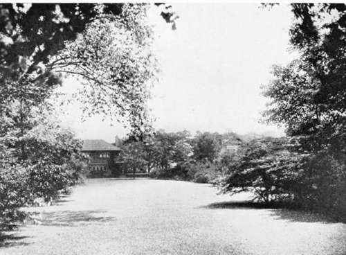

On Citizens Retiring To The Country. Continued
Description
This section is from the book "Landscape Gardening", by Andrew Jackson Downing. Also available from Amazon: Landscape Gardening.
On Citizens Retiring To The Country. Continued
Everything which a citizen does in the country, costs him an incredible sum. In Europe (heaven save the masses), you may have the best of laboring men for twenty or thirty cents a day. Here you must pay them a dollar,* at least our amateur must, though the farmers contrive to get their labor for eight or ten dollars a month and board. The citizen's home once built, he looks upon all heavy expenditures as over; but how many hundreds, perhaps thousands, has he not paid for out-buildings, for fences, for roads, etc. Cutting down yonder hill, which made an ugly blotch in the view, — it looked like a trifling task; yet there were $500 swept clean out of his bank account, and there seems almost nothing to show for it. You would not believe now that any hill ever stood there — or at least that nature had not arranged it all (as you feel she ought to have done), just as you see it. Your favorite cattle and horses have died, and the flock of sheep have been sadly diminished by the dogs, all to be replaced — and a careful account of the men's time, labor and manure on the grain fields, shows that for some reason that you cannot understand, the crop — which is a fair one, has actually cost you a trifle more than it is worth in a good market.
To cut a long story short, the larger part of our citizens who retire upon a farm to make it a country residence, are not aware of the fact that capital cannot be profitably employed on land in the Atlantic states without a thoroughly practical knowledge of farming.† A close and systematic economy, upon a good soil, may enable, and does enable some gentlemen farmers that we could name, to make a good profit out of their land, but citizens who launch boldly into farming, hiring farm laborers at high prices, and trusting operations to others that should be managed under the master's eye, are very likely to find their farms a sinking fund that will drive them back into business again.
* Think of those exorbitant days, when farm laborers got a dollar for twelve hours' work! — F. A. W.
† Mr. Downing, after the fashion of his time, used italics very freely in his essays. Following the taste of our time I have put most of his italics into Roman type; but in this case I have allowed it to stand as he wrote it, sorry only that I cannot underscore his statement further. His observation is just as true and just as important now as it was in 1852. — F. A. W.
To be happy in any business or occupation (and country life on a farm is a matter of business), we must have some kind of success in it; and there is no success without profit, and no profit without practical knowledge of farming.
The lesson that we would deduce from these reflections is this; that no mere amateur should buy a large farm for a country residence with the expectation of finding pleasure and profit in it for the rest of his life, unless, like some citizens that we have known — rare exceptions — they have a genius for all manner of business, and can master the whole of farming, as they would learn a running hand in six easy lessons. Farming, in the older states, where the natural wealth of the soil has been exhausted, is not a profitable business for amateurs — but quite the reverse. And a citizen who has a sufficient income without farming had better not damage it by engaging in so expensive an amusement.
"But we must have something to do; we have been busy near all our lives, and cannot retire into the country to fold our hands and sit in the sunshine to be idle." Precisely so. But you need not therefore ruin yourself on a large farm. Do not be ambitious of being great landed proprietors. Assume that you need occupation and interest, and buy a small piece of ground — a few acres only — as few as you please — but without any regard for profit. Leave that to those who have learned farming in a more practical school. You think, perhaps, that you can find nothing to do on a few acres of ground. But that is the greatest of mistakes. A half a dozen acres, the capacities of which are fully developed, will give you more pleasure than five hundred poorly cultivated. And the advantage for you is that you can, upon your few acres, spend just as little or just as much as you please. If you wish to be prudent, lay out your little estate in a simple way, with grass and trees, and a few walks, and a single man may then take care of it. If you wish to indulge your taste, you may fill it with shrubberies, and arboretums, and conservatories, and flower-gardens, till every tree and plant and fruit in the whole vegetable kingdom, of really superior beauty and interest, is in your collection. Or, if you wish to turn a penny, you will find it easier to take up certain fruits or plants and grow them to high perfection so as to command a profit in the market than you will to manage the various operations of a large farm. We could point to ten acres of ground from which a larger income has been produced than from any farm of five hundred acres in the country. Gardening, too, offers more variety of interest to a citizen than farming; its operations are less rude and toilsome, and its pleasures more immediate and refined. Citizens, ignorant of farming, should therefore buy small places rather than large ones, if they wish to consult their own true interest and happiness.
Fig. 34. Well-Graded, Well-Planted Grounds.
But some of our readers who have tried the thing may say that it is a very expensive thing to settle oneself and get well established, even on a small place in the country. And so it is, if we proceed upon the fallacy, as we have said, that everything in the country is cheap. Labor is dear; it costs you dearly to-day, and it will cost you dearly tomorrow and the next year. Therefore in selecting a site for a home in the country always remember to choose a site where nature has done as much as possible for you. Don't say to yourself as many have done before you — "Oh! I want occupation, and I rather like the new place — raw and naked though it may be. I will create a paradise for myself. I will cut down yonder hill that intercepts the view, I will level and slope more gracefully yonder rude bank, I will terrace this rapid descent, I will make a lake in yonder hollow." Yes, all this you may do for occupation, and find it very delightful occupation too, if you have the income of Mr. Astor. Otherwise, after you have spent thousands in creating your paradise and chance to go to some friend who has bought all the graceful undulations and sloping lawns and sheets of water, natural, ready made — as they may be bought in thousands of purely natural places in America, for a few hundred dollars, — it will give you a species of pleasure-ground-dyspepsia to see how foolishly you have wasted your money. And this more especially when you find, as the possessor of the most finished place in America finds, that he has no want of occupation, and that far from being finished, he has only begun to elicit the highest beauty, keeping and completeness of which his place is capable.
It would be easy to say a great deal more in illustration of the mistakes continually made by citizens going into the country; of their false ideas of the cost of doing everything; of the profits of farming; of their own talent for making an income from the land, and their disappointment, growing out of a failure of all their theories and expectations. But we have perhaps said enough to cause some of our readers about to take the step to consider whether they mean to look upon country life as a luxury they are willing to pay so much a year for, or as a means of adding something to their incomes. Even in the former case they are likely to underrate the cost of the luxury, and in the latter they must set about it with the frugal and industrial habits of the real farmer, or they will fail. The safest way is to attempt but a modest residence at first, and let the more elaborate details be developed, if at all, only when we have learned how much country life costs, and how far the expenditure is a wise one. Fortunately it is art and not nature which costs money in the country, and therefore the beauty of lovely scenery and fine landscapes (the right to enjoy miles of which may often be had for a trifle), in connection with a very modest and simple place, will give more lasting satisfaction than gardens and pleasure grounds innumerable. Persons of moderate means should, for this reason, always secure, in their fee simple, as much as possible of natural beauty, and undertake the elaborate improvement of only small places which will not become a burden to them. Millionaires, of course, we leave out of the question. They may do what they like. But most Americans buying a country place may take it for their creed, that Man wants but little land below, Nor wants that little dear.
Continue to:
- prev: Chapter XIV. On Citizens Retiring To The Country
- Table of Contents
- next: Chapter XV. How To Choose A Site For A Country Seat